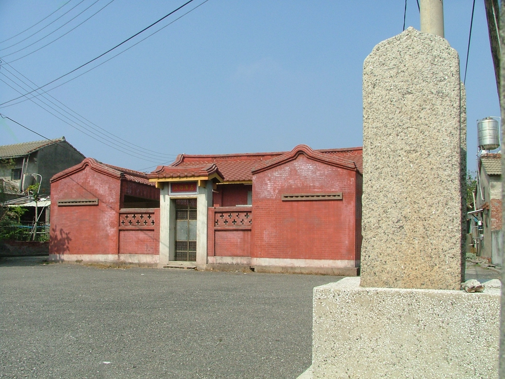
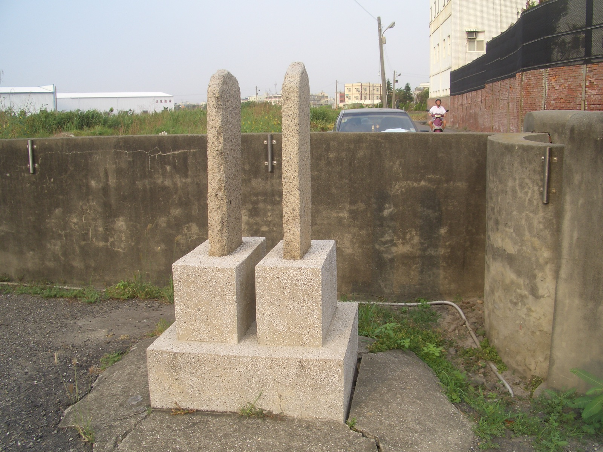

「旗竿座」是清朝科舉制度中，經由種種的考試過關，封賜的階層必須到達「貢生」以上，才能在宗祠或祖先墓地前設置。
廩生一出貢，官方即給予貢生「旗匾竿」銀一兩二錢五分，做為豎旗掛匾費用。溝內村許氏宗祠前的石製「旗杆座」一組。 許氏旗杆座
一直為鄰近鄉鎮認為是古，這些都是清代留下來的古物，距今至少一百多年。
許氏旗杆座意老實人的線西，發現在溝內村有清朝時期象徵讀書人光耀門楣的「旗杆座」。經由線西文史工作者黃明田的訪查，「旗杆座」為許氏第三十二世祖許鐘
俊，號經邦，中式科舉所立。依其家族流傳史，該祖先為「進士及第」，然並未有「文魁」之類的賜匾說法；其耕讀於線西溝內村，村內亦無口述流傳史，遍查文獻
與鄰近鄉鎮史籍，亦未發現他的名字。但從許氏宗祠前的一對旗杆座，可以肯定其身分是科舉裡至少在「貢生」以上，不僅是線西許氏祖先的榮耀，也為線西增添了
不少人文色彩。
「旗竿座」是清朝科舉制度中，經由種種的考試過關，封賜的階層必須到達「貢生」以上，才能在宗祠或祖先墓地前設置。一般大家的印象清朝的科舉有秀才、舉
人、進士和狀元等稱呼，然而不知道這些稱呼之間，也有許多的封號。而「貢生」就是秀才與舉人之間的封號，讀書人首先通過所屬縣（彰化縣）每三年兩次舉辦的
考試，成為「生員」（秀才），秀才可進入府州縣廳學就讀，就讀期份舉行的鄉試（考舉人），每年都會舉行歲考，歲考優間，為了評定其優劣，以獎懲和錄取優秀
者參加所屬省秀者，由初進學的秀才稱為附生，附生升增生，增生升廩生，廩生升歲貢生。除歲貢生外，又有附貢生、恩貢生、拔貢生、優貢生等。
廩生一出貢，官方即給予貢生「旗匾竿」銀一兩二錢五分，做為豎旗掛匾費用。溝內村許氏宗祠前的石製「旗杆座」一組，這些都是清代留下來的古物，距今至少一
百多年。依照清朝政府規定，考上秀才只算是府、縣儒學生員，還不能豎旗掛匾，等到秀才經補廩再考上貢生，或中式舉人、進士，才具備立旗、掛匾的資格，。
|


許氏旗杆座
|